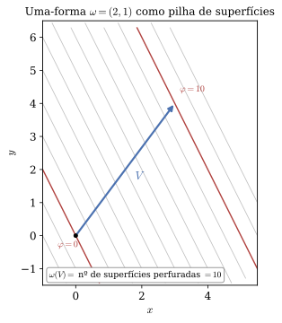
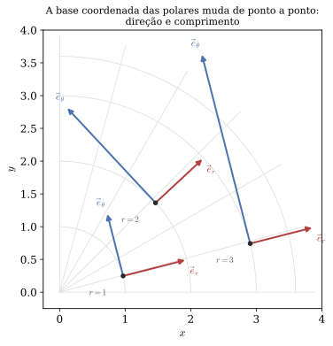
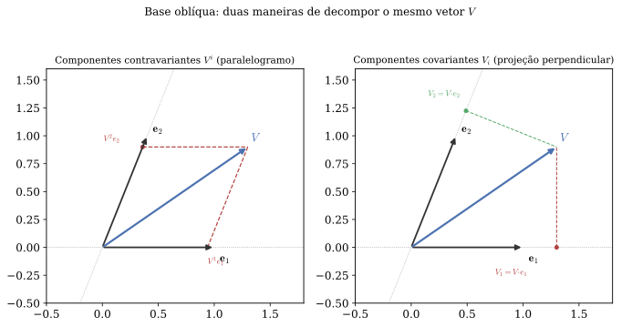

Relatividade Geral · UDESC/CCT · Capítulo 3
Tensores no
espaço-tempo plano
A gramática que separa a física da descrição — e a última vez no curso em que derivar um tensor é fácil.
Aulas 11 a 15 · use → e ← para navegar, F para tela cheia
Roteiro
O caminho deste capítulo
| Aula | Assunto |
|---|---|
| 11 | 1-formas, e a base dual |
| 12 | Tensores (r,s), índices, simetrias |
| 13 | A métrica como ponte |
| 14 | Bases não ortonormais, e a derivada |
| 15 | Oficina computacional III |
Uma frase organiza o capítulo: existem dois tipos de objeto de quatro componentes, distinguidos por como mudam de base — e a métrica é o que traduz um no outro.
A ordem aqui não é a do Schutz. Ele abre pela métrica e pela definição abstrata de tensor; nós abrimos pelo gradiente, que é um objeto que você já usa há anos. Assim a 1-forma aparece em vez de ser postulada.
Seção 3.1
O gradiente não é um vetor
Seja f(x^\mu) um campo escalar — a temperatura ao longo do espaço-tempo. As derivadas parciais \partial_\mu f formam quatro números, e a tentação é chamá-los de “o vetor gradiente”.
\frac{\partial f}{\partial x^{\mu'}} =\frac{\partial x^\nu}{\partial x^{\mu'}}\,\frac{\partial f}{\partial x^\nu}
Mas quatro números só são um vetor se transformarem com \Lambda, e estes transformam com a inversa. As duas matrizes em jogo são inversas uma da outra — não iguais. O gradiente se transforma com a matriz errada para ser um vetor.
Seção 3.1 · resultado
Duas espécies de objeto
| Transforma com | Nome | Índice | Exemplo |
|---|---|---|---|
| \Lambda | vetor | em cima | U^\mu, p^\mu |
| \Lambda^{-1} | 1-forma | embaixo | \partial_\mu f |
E é por isso que a contração funciona: aplicar uma 1-forma a um vetor,
\tilde W(\vec V)=W_\mu V^\mu ,
produz um número igual em todas as bases, porque as duas matrizes se cancelam. Nenhuma métrica foi usada. A contração de um índice em cima com um embaixo é a única operação que produz invariantes de graça — e é por isso que a notação insiste tanto na posição dos índices.
Seção 3.1 · a conta que costuma faltar
Por que o jacobiano é a matriz de Lorentz
Batizar \Lambda^{\nu}{}_{\mu'}\equiv\partial x^\nu/\partial x^{\mu'} parece definição, e é uma conta de uma linha. Da relação inversa x^\nu=\Lambda^{\nu}{}_{\alpha'}x^{\alpha'}:
\frac{\partial x^\nu}{\partial x^{\mu'}} =\Lambda^{\nu}{}_{\alpha'}\,\frac{\partial x^{\alpha'}}{\partial x^{\mu'}} =\Lambda^{\nu}{}_{\alpha'}\,\delta^{\alpha'}{}_{\mu'} =\Lambda^{\nu}{}_{\mu'}
Dois passos fizeram o trabalho. Tirar \Lambda de dentro da derivada só se pode porque as entradas dele são números fixos — dependem da velocidade relativa, não do evento. E \partial x^{\alpha'}/\partial x^{\mu'}=\delta vale porque as coordenadas são independentes entre si.
E é aqui que a igualdade vai falhar. Em coordenadas curvilíneas o jacobiano depende do ponto, e não existe matriz constante \Lambda nenhuma. O jacobiano é o objeto geral; \Lambda é o caso particular em que ele é o mesmo em toda parte.
Seção 3.1.1
Uma 1-forma é uma pilha de superfícies

Um vetor é uma seta: magnitude e direção. Uma 1-forma se visualiza melhor como uma pilha de superfícies — as de nível de \varphi(x)=W_\mu x^\mu.
\tilde W(\vec V) é, literalmente, o número de superfícies que a seta perfura. Aqui \tilde W=(2,1), \vec V=(3,4), e a seta vai de \varphi=0 a \varphi=10.
E as superfícies não são analogia escolhida a dedo: para o gradiente elas são literalmente as curvas de nível de f — o que um mapa topográfico desenha.
Seção 3.1.2
Dobrar a seta não é dobrar a pilha
\Delta\ell=\frac{1}{|\tilde W|}
A magnitude de uma 1-forma é o inverso do espaçamento. Uma 1-forma forte tem folhas apertadas — não folhas grandes. Quem chega das setas espera o contrário.
Com isso \tilde W(\vec V) tem uma leitura só: é o comprimento de \vec V medido com uma régua cujo passo é o espaçamento da pilha.
| Dobrar | O que acontece |
|---|---|
| \vec V\to2\vec V | a seta estica; a pilha não muda |
| \tilde W\to2\tilde W | a seta é a mesma; as folhas apertam pela metade |
Os dois dão 2\,\tilde W(\vec V), e nenhuma conta os distingue. A figura distingue — e essa é a razão de a imagem valer a pena.
Interlúdio
O mínimo de álgebra linear
| Da soma | |
|---|---|
| A1 | u+v=v+u |
| A2 | (u+v)+w=u+(v+w) |
| A3 | existe 0 com v+0=v |
| A4 | existe -v com v+(-v)=0 |
| Do produto por escalar | |
| M1 | a(bv)=(ab)v |
| M2 | 1\,v=v |
| M3 | a(u+v)=au+av |
| M4 | (a+b)v=av+bv |
São oito, e repare no que a lista não diz: nenhuma palavra sobre setas, comprimento, ângulo ou direção.
Ser espaço vetorial é de graça; medir é estrutura extra. É por isso que \partial_\mu f existe antes de qualquer métrica — e por isso que a métrica é o que traduz vetores em 1-formas, não o que as cria.
Obedecem aos axiomas sem parecer flecha: polinômios, funções contínuas, matrizes, as soluções de y''+\omega^2y=0 (dimensão dois, base \{\cos\omega t,\ \sin\omega t\}), 1-formas — e os kets da mecânica quântica.
Interlúdio · o paralelo
Bras e kets são a mesma construção
| Neste curso | Mecânica quântica | |
|---|---|---|
| vetor | \vec V, componentes V^\mu | ket |\psi\rangle |
| elemento do dual | 1-forma \tilde W, W_\mu | bra \langle\phi| |
| o número | \tilde W(\vec V)=W_\mu V^\mu | \langle\phi|\psi\rangle |
| base dual | \tilde\omega^\mu(\vec e_\nu)=\delta^\mu{}_\nu | \langle m|n\rangle=\delta_{mn} |
| reconstruir | \vec V=V^\mu\vec e_\mu | |\psi\rangle=\sum_n\langle n|\psi\rangle|n\rangle |
| a régua que traduz | a métrica, W_\mu=g_{\mu\nu}V^\nu | a conjugação hermitiana |
Onde o paralelo quebra: os escalares da quântica são complexos e a passagem ket \to bra é antilinear; e o produto interno de Hilbert é positivo definido, enquanto \eta_{\mu\nu} não é — Minkowski tem vetores não nulos de norma zero, que nenhum espaço de Hilbert admite. O que os dois casos têm em comum é o motivo de trazer o assunto: ambas as notações escondem a distinção entre o espaço e o seu dual, e escondem pelo mesmo motivo — na base padrão a régua que traduz um no outro é trivial.
Seção 3.2
A base dual
1-formas se somam e se multiplicam por número: formam um espaço vetorial próprio, e todo espaço vetorial tem bases. Fixada \{\vec e_\mu\}, a base de 1-formas fica determinada:
\tilde\omega^\mu(\vec e_\nu)=\delta^\mu{}_\nu
A razão de pedir exatamente isso cabe em uma linha. Escrevendo \tilde W=W_\mu\tilde\omega^\mu e \vec V=V^\nu\vec e_\nu, sai \tilde W(\vec V)=W_\mu V^\mu: é a condição para que “multiplicar componente por componente e somar” seja de fato a aplicação da 1-forma ao vetor.
Pela pilha: \tilde\omega^0 é a família de superfícies de x^0 constante, espaçadas de uma unidade. O vetor \vec e_0 atravessa exatamente uma — daí o 1 — e os outros três correm ao longo delas sem atravessar nenhuma, daí os zeros.
Seção 3.3
Tensores de tipo (r,s)
Uma máquina linear em cada entrada, que recebe r 1-formas e s vetores e devolve um número. Cada índice transforma com a matriz que lhe cabe:
T^{\mu'\nu'}{}_{\rho'} =\Lambda^{\mu'}{}_{\alpha}\,\Lambda^{\nu'}{}_{\beta}\, \Lambda^{\gamma}{}_{\rho'}\;T^{\alpha\beta}{}_{\gamma}
É essa lei, e apenas ela, que define um tensor. Um arranjo de números com índices que não a obedeça não é tensor, por mais que se pareça com um — e o exemplo mais importante são os símbolos de Christoffel \Gamma^\mu{}_{\nu\rho}, que têm três índices e não são tensores.
Seção 3.4
Índices: a regra, e os três erros
A regra é uma. Índice repetido uma vez em cima e uma embaixo é somado e desaparece; os que sobram são livres, e têm de aparecer de modo idêntico nos dois lados e em todos os termos de uma soma.
| Erro | Por quê |
|---|---|
| A_\mu B^\mu C^\mu | índice três vezes: a convenção não diz o que fazer |
| A^\mu=B^\nu | índice livre troca de nome entre os lados |
| A_\mu+B^\mu | tipos diferentes: um é 1-forma, o outro vetor |
O hábito que previne os três é ler os índices em voz alta antes de escrever o próximo passo: os repetidos somem por soma, os livres nomeiam o resultado.
Interlúdio · o Tessera
A álgebra que não encaixa
Existe uma segunda maneira de conferir os índices, e ela não depende de disciplina nenhuma — basta que a expressão errada não caiba. E os três erros do slide anterior são exatamente os três que o programa recusa, o que não é coincidência: saem da mesma regra.
| A_\mu B^\mu C^\mu | “o índice μ aparece 3 vezes; o máximo é duas” |
| A^\mu=B^\nu | “os dois lados têm índices livres diferentes” |
| A_\mu+B^\mu | “todos os termos de uma soma precisam ter os mesmos índices livres” |
E na paleta há um grupo chamado não são tensores, com \Lambda e \Gamma tracejados: montar \Gamma^\mu{}_{\nu\rho}V^\nu faz o programa avisar que aquela parcela sozinha não se transforma como tensor.
Seção 3.5
Simetria e antissimetria
M_{(\mu\nu)}=\tfrac12(M_{\mu\nu}+M_{\nu\mu}), \qquad M_{[\mu\nu]}=\tfrac12(M_{\mu\nu}-M_{\nu\mu})
Qualquer tensor (0,2) se separa nas duas partes, e a separação é única. A contagem fecha: das 16 entradas, 10 vão para a simétrica e 6 para a antissimétrica.
A métrica é simétrica porque o produto escalar é. E é a antissimetria de F_{\mu\nu} que faz caberem numa matriz 4\times4 apenas os seis números de \bm E e \bm B.
Simétrico contra antissimétrico dá zero: S^{\mu\nu}A_{\mu\nu}=0.
A consequência é maior do que parece. Quando algo simétrico multiplica algo de simetria desconhecida, só a parte simétrica sobrevive — de modo que se pode simetrizar de graça o outro fator. É esse truque que deduz os símbolos de Christoffel, e é a razão de reconhecer simetrias antes de começar qualquer conta.
Seção 3.6
A métrica como ponte
A_\mu=\eta_{\mu\nu}A^\nu deixa de ser abreviação: A_\mu é a 1-forma que a métrica associa ao vetor A^\mu — a que, aplicada a um vetor \vec B qualquer, devolve o produto escalar.
\eta^{\mu\alpha}\eta_{\alpha\nu}=\delta^\mu{}_\nu , \qquad A^\mu=\eta^{\mu\nu}A_\nu
Em Minkowski \eta^{\mu\nu} é numericamente igual a \eta_{\mu\nu}, e o efeito de subir ou descer é só trocar o sinal da componente temporal. Isso é coincidência da assinatura e das coordenadas, não uma regra — com g_{\mu\nu} dependendo da posição, g^{\mu\nu} será uma matriz diferente, obtida invertendo a primeira de fato.
E duas razões para não tratar A^\mu e A_\mu como o mesmo objeto: a tradução depende da métrica; e a 1-forma mais importante da física — o gradiente — não veio de vetor nenhum.
Seção 3.7
O que significa uma equação tensorial
Uma afirmação independente de coordenadas. Isso não quer dizer que as componentes sejam iguais em todos os referenciais — quer dizer que qualquer observador que escreva a relação nas suas próprias componentes obterá uma equação da mesma forma.
p^\mu p_\mu=-m^2
Escalar: cada observador atribui valores diferentes a E e \bm p, e todos obtêm o mesmo E^2-\bm p^2.
A^\mu=B^\mu+C^\mu
Vetorial: as componentes mudam de referencial, e a relação entre os vetores permanece.
É a razão profunda para preferirmos tensores em relatividade: eles separam física de descrição. O apêndice interativo deste capítulo volta a isso desenhando a mesma física em duas folhas diferentes.
Seção 3.8.1
Fora da base ortonormal: as polares

Há duas maneiras independentes de sair da base ortonormal, e convém não misturá-las: a base pode deixar de ter comprimento 1, ou deixar de ser perpendicular. A primeira já basta.
|\vec e_r|=1,\qquad |\vec e_\theta|=r
\vec e_\theta tem componentes (0,1): é o deslocamento de um radiano. E um radiano é um arco mais comprido longe da origem — por isso a seta cresce.
A métrica sai da tabela de produtos escalares: g_{rr}=1, g_{\theta\theta}=r^2, g_{r\theta}=0. Ortogonal, mas não ortonormal.
Seção 3.8.1 · o ponto
Não é sobre ângulo, é sobre régua
No ponto r=2, \theta=0, com \vec V=\vec e_x+\vec e_y:
V^r=1,\qquad V^\theta=\tfrac12
Reconstruir \vec V pede meio \vec e_\theta para andar uma unidade em y.
V_r=1,\qquad V_\theta=2
Projetar dá quatro vezes mais no slot \theta — que é g_{\theta\theta}=r^2 em ação.
V_\theta=\vec V\cdot\vec e_\theta =V^r\,(\vec e_r\cdot\vec e_\theta)+V^\theta\,(\vec e_\theta\cdot\vec e_\theta) =g_{\theta\theta}\,V^\theta
Um fator 4 entre a componente de cima e a de baixo com os eixos perpendiculares. A distinção entre V^\mu e V_\mu não nasce da obliquidade: basta a base não ser unitária. E o \vec e_\theta foi consumido pelo produto — é aquilo com que se multiplica, e o que sobra é um número.
Seção 3.8.1 · a base dual, rápido
Vetores nas colunas, 1-formas nas linhas da inversa
A condição \tilde\omega^\mu(\vec e_\nu)=\delta^\mu{}_\nu é a afirmação de que duas matrizes são inversas uma da outra, escrita entrada por entrada. Então a base dual sai sem trabalho novo:
J=\begin{pmatrix}\cos\theta & -r\sin\theta\\ \sin\theta & r\cos\theta\end{pmatrix}, \quad \det J=r
Os vetores de base como colunas — e o r do determinante é o mesmo do elemento de área r\,dr\,d\theta do cálculo.
J^{-1}=\begin{pmatrix}\cos\theta & \sin\theta\\[4pt] -\dfrac{\sin\theta}{r} & \dfrac{\cos\theta}{r}\end{pmatrix}
As linhas da inversa são \tilde\omega^r e \tilde\omega^\theta.
E o inverso aparece de novo onde importa: |\vec e_\theta|=r contra |\tilde\omega^\theta|=1/r. Onde a seta de base é longa, as folhas da 1-forma de base são raras, e o produto dos dois comprimentos é sempre 1.
Seção 3.8.2
Uma base genuinamente oblíqua

Agora a segunda maneira: os eixos deixarem de ser perpendiculares. Aí as duas decomposições diferem em direção, e não só em escala.
As componentes covariantes são as componentes na base dual: \vec V=V_i\,\vec e^{\,i} com \vec e^{\,i}=g^{ij}\vec e_j. Como \vec e^{\,1}\cdot\vec e_2=0, o eixo recíproco \vec e^{\,1} é perpendicular a \vec e_2 — e não paralelo a \vec e_1.
Em Minkowski, obliquidade de verdade aparece nas coordenadas de cone de luz: u=t-x, w=t+x dão ds^2=-du\,dw, com a diagonal da métrica nula — os dois vetores de base são nulos, cada um ortogonal a si mesmo.
Seção 3.9
Derivar: a última coisa fácil
Em coordenadas de Minkowski, derivar as componentes de um tensor acrescenta um índice embaixo e produz outro tensor:
\partial_{\alpha'}T^{\mu'\nu'} =\Lambda^{\beta}{}_{\alpha'}\,\Lambda^{\mu'}{}_{\rho}\,\Lambda^{\nu'}{}_{\sigma}\, \partial_\beta T^{\rho\sigma}
Guarde a frase “os coeficientes são constantes”, porque é ela que vai falhar. Em coordenadas curvilíneas — e, mais tarde, em espaço-tempo curvo, onde nenhuma escolha de coordenadas as torna constantes em toda parte — a matriz varia de ponto a ponto, e derivá-la produz termos extras.
Aí \partial_\alpha T^{\mu\nu} deixa de ser tensor, e é preciso corrigi-lo: essa correção é a derivada covariante, e os termos extras são os símbolos de Christoffel. Por ora, aproveite a simplicidade — ela é a última.
Leitura extra
Vetores são derivadas, 1-formas são diferenciais
\vec e_\mu=\frac{\partial}{\partial x^\mu}, \qquad \tilde\omega^\mu=\dd x^\mu
| A conta do capítulo | Com esta identificação |
|---|---|
| a dualidade | \dd x^\mu(\partial_\nu)=\partial x^\mu/\partial x^\nu=\delta^\mu{}_\nu |
| a lei de transformação | é a regra da cadeia, lida nos dois sentidos |
| mudar de coordenadas | substituir e multiplicar diferenciais |
A economia de verdade é a última linha. A métrica das polares, que a Seção 3.8.1 obtém montando a base e contraindo, sai em três linhas:
\dd s^2=\dd x^2+\dd y^2=\dd r^2+r^2\dd\theta^2
E o cone de luz sai em duas: \dd u\,\dd w=(\dd t-\dd x)(\dd t+\dd x)=-\dd s^2, logo g_{uw}=-\tfrac12.
O Schutz enuncia isso de passagem na Seção 5.2 e segue adiante. Quem quiser o desenvolvimento: Geometrical Methods of Mathematical Physics, do mesmo autor — capítulo 2 para vetores como derivadas, 4 para formas.
Apêndice interativo · Seção 3.8.2
Quem está quadrado?
v = 0,50 · \gamma = 1,155
(t,x) = (0,90 ; 0,35) → (0,84 ; -0,11)
É a ideia do papel monolog. Ninguém conclui que o dilog corrigiu os dados: ele foi riscado para aquela lei. Aqui cada folha está riscada para um observador — e a obliquidade não desaparece, troca de lado.
O evento E é o mesmo ponto nas duas folhas. O que muda são as réguas, e o que sobrevive é o intervalo: \dd s^2 = −0,69 e −0,69.
O limite honesto da analogia: não existe folha em que os dois apareçam quadrados ao mesmo tempo — a assinatura (-,+) não vira (+,+) por reparametrização nenhuma, e não por curvatura, porque as duas geometrias são planas. O obstáculo é o cone de luz: o único desenho igual nas duas folhas.
Apêndice interativo · a folha que existe
O disco das rapidezas
\varphi = 2,222 · v = 0,977
centro: 0 · lados: 1,600 · 1,200 · 2,222
Cada ponto é um referencial inteiro e a rapidez é a distância. Troque quem está no centro: o triângulo desliza sem deformar — os três lados medem o mesmo e a rotação de Wigner não muda um dígito. É assim que a figura mostra que nenhum referencial é privilegiado. Ela não desenha base nenhuma: bases são assunto do painel anterior.
Ângulo reto no vértice 1, daí \cosh\varphi=\cosh\varphi_1\cosh\varphi_2. Os três ângulos somam 19,3° + 90° + 31,4° = 140,7°, e o que falta para 180° é a rotação de Wigner, \varepsilon = 39,3° — que numa folha hiperbólica é a área do triângulo.